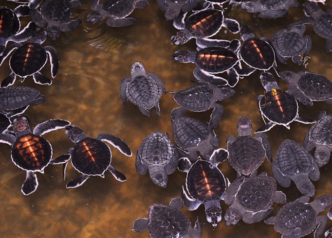
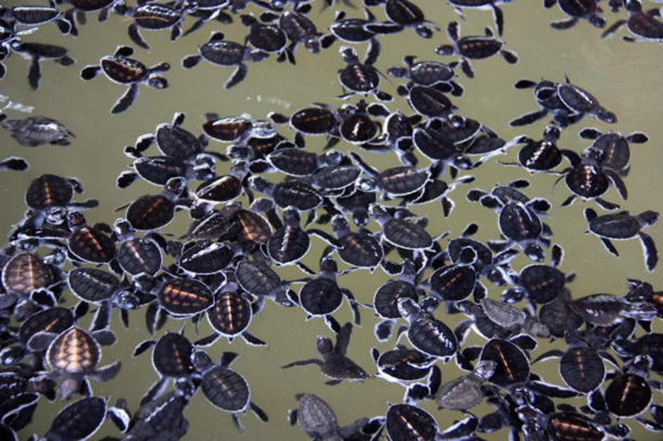
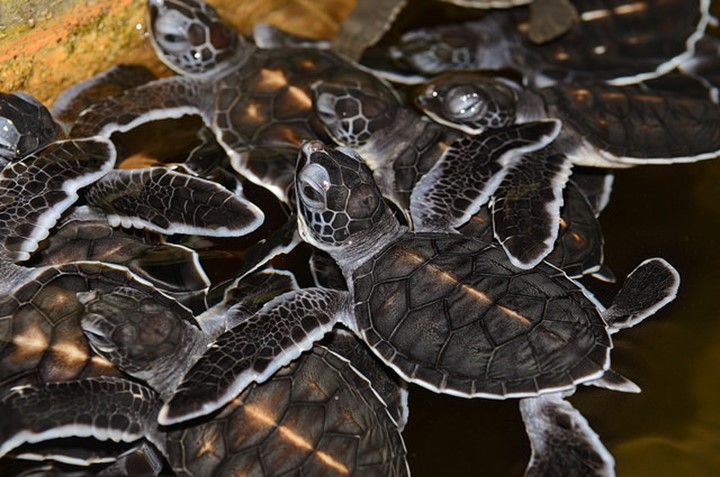

The Turtle Population of Sri Lanka
Because they live in the sea and only the females come ashore, they are rarely seen. Additionally, they only do so at night. Additionally, land tortoises and land turtles are frequently observed.There are 250 different species of turtles on the planet today. Sea turtles, which are seven of these, are marine life. The remaining 243 species are terrestrial or dwell in freshwater marshes and ponds. Tortoises are the name for turtles that only live on land, or terrestrial turtles.
The shores of Sri Lanka are visited by five of the world's seven species of sea turtles during the breeding season. The Green Turtle are they. (Chelonia mydas), Hawksbill Turtle (Eretmochelys imbricata), Olive Ridley (Lepidochelys olivacea), Loggerhead (Caretta caretta) and Leatherback (Dermochelys coriacea). The sea turtles are called Kesbawa in Sinhala and Amai in Tamil.
There are three species of freshwater turtles and one terrestrial tortoise in Sri Lanka. The freshwater turtles are Parker’s Black Turtle (Melanochelys trijuga pakeri) Sri Lanka Black Turtle (Melanochelys trijuga thermalis) and the Soft or Flapshell turtle (Lissemys punctata punctata). The terrestrial tortoise is the Star tortoise (Geochelone elegans).
Turtles and tortoises have different types of shells. Swimming is made simple by the turtles' short, streamlined carapace, or top portion of their shell. The tortoise, on the other hand, has a thicker and more protective shell. The two species' plastrons or undershells differ in the same way.
Although the females return to the same beaches to lay their eggs, the males never come ashore once they are in the sea as hatchlings. Turtles take at least 20 years, and occasionally even up to 30 years, to reach maturity. After mating at sea, mature females come ashore to lay their eggs.
Always after dark, they enter. To lay her eggs, the female moves as far up the beach as she can. This is done to prevent the eggs from being ruined by the water that rises with the tide. Once on land, the female toils up the beach to a location of her choosing. Then, after turning to face the ocean, it uses its flippers to make a shallow depression in the sand. Once the pit has been created, its flippers are used to create a cylindrical egg chamber beneath her back.
Depending on how long her flippers are, the egg chamber measures between 18 and 20 inches. The eggs are laid in the shape of ping-pong balls and have soft shells. The number of eggs laid varies depending on the species of turtle as well as the individual turtles. When they are laid, they are covered in mucus. After the eggs are laid, the female labors back to the sea without ever seeing her offspring, and the nest chamber and depression are covered in sand.
The nests are occasionally dug up and the eggs eaten by stray dogs and monitor lizards. The turtle leaves a trail along the beach with its flippers as it comes ashore and departs, which the predators—including humans—can follow to locate the nest.
The eggs take about 50 days to hatch, and as soon as they do, the hatchlings head for the ocean. Some of the black hatchlings, which travel on the white sand, are eaten by crows, seagulls, and other seabirds.(Sun Leisure World, 2022)
Turtles In The Sea
Few experiences compare to seeing a sea turtle up close, as divers and snorkelers around the world are aware. The enormous reptiles glide through the water with otherworldly ease; the largest can reach lengths of six feet and weights of three quarters of a ton. One can also see the miraculous event of hundreds of baby turtles miraculously emerging from their buried eggs and bumblingly bolting toward the surf on a nesting beach.
Sea Turtles help maintain the health of the world's oceans
Sea turtles have been vital to preserving the harmony and health of our marine habitats for more than 100 million years. They support flourishing coral reefs and deliver essential nutrients from the sea to the dunes along the coast. Sea turtles are necessary for ocean health. Being a "keystone species" means that sea turtles have a significant impact on the surrounding ecosystem and other species. The natural order can be upset if a keystone species is eliminated from a habitat, which has various effects on other animals and plants.
Their Habbitats
The majority of turtle species are found in Southeast Asia and North America, despite the fact that they have adapted to a remarkable variety of habitats. In both areas, the majority of species are aquatic, living in bodies of water that range in size from tiny ponds and bogs to large lakes and rivers. While some animals spend time on both land and water, tortoises are among those that only spend time on land. Turtles come in a variety of species, but each has a preferred habitat that it rarely inhabits.